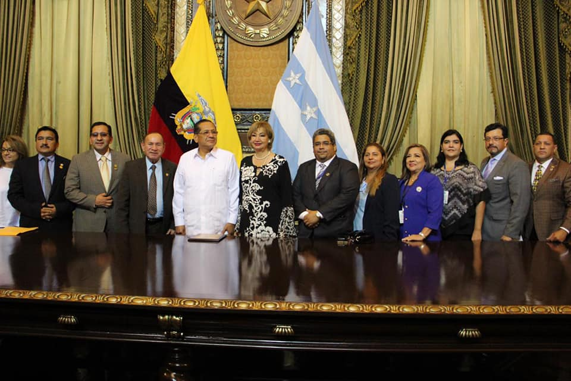
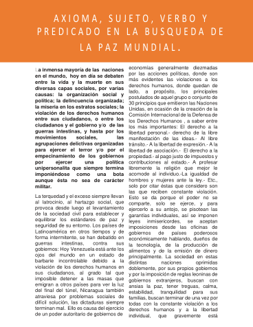
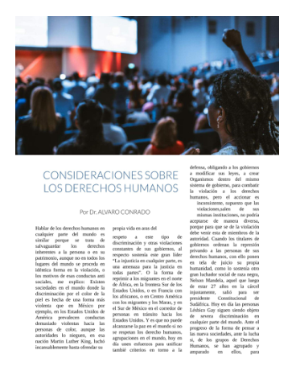
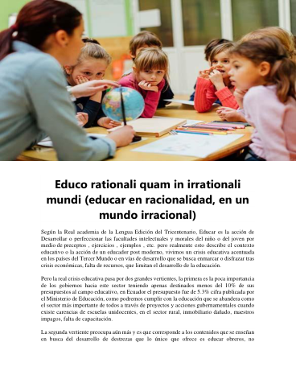
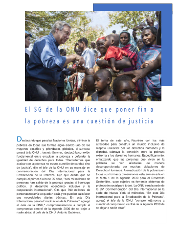
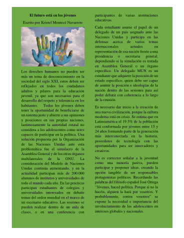
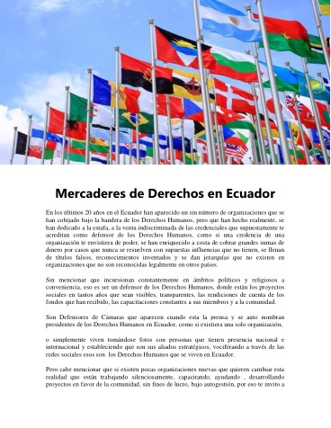
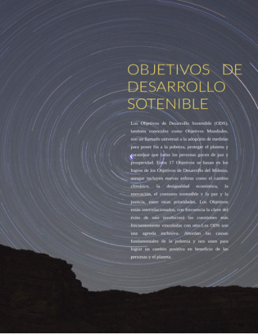

Educación
Formación y promoción para conocer y ejercer los derechos humanos.

Educación, promoción y defensa de los derechos humanos para construir una cultura de paz, dignidad y respeto.
ConózcanosFormación y promoción para conocer y ejercer los derechos humanos.
Orientación y observación del respeto de los derechos y del debido proceso.
Solidaridad y proyectos dirigidos a los sectores más vulnerables.
Profesionales y ciudadanos comprometidos con el servicio a la comunidad.
El Centro Observatorio Internacional de Derechos Humanos Ecuador es una organización sin fines de lucro que promueve el conocimiento, el respeto y la defensa de los derechos humanos.
Creado el 24 de septiembre de 2017, impulsa la educación, la investigación, la gestión social y la cooperación para contribuir al fortalecimiento de una sociedad más justa.
Acuerdo Ministerial MJDHC-CGAJ-2018-0052-A.
Defender y promover los derechos humanos en la sociedad, en busca de la construcción de nuevos paradigmas que permitan establecer una cultura de paz y de derechos, partiendo del mejoramiento social de los sectores más vulnerables de nuestro país.
Liderar la defensa y promoción de los derechos humanos en Ecuador y Latinoamérica, ser pioneros en procesos educativos y promotores de proyectos sociales que mejoren las condiciones de vida de los sectores más vulnerables, y referentes de trabajo cooperativo interinstitucional.
Espacios de formación, participación e inclusión. Fotografías del archivo institucional del Centro.
Consulte las ediciones disponibles de nuestra revista. Reflexiones, experiencias y aportes sobre derechos humanos.
Los PDF originales están en español. El selector traduce los textos de la página.
Artículos del archivo recibido. Disponibles para lectura y descarga en su formato original.
Los PDF originales están en español. El selector traduce los textos de la página.






